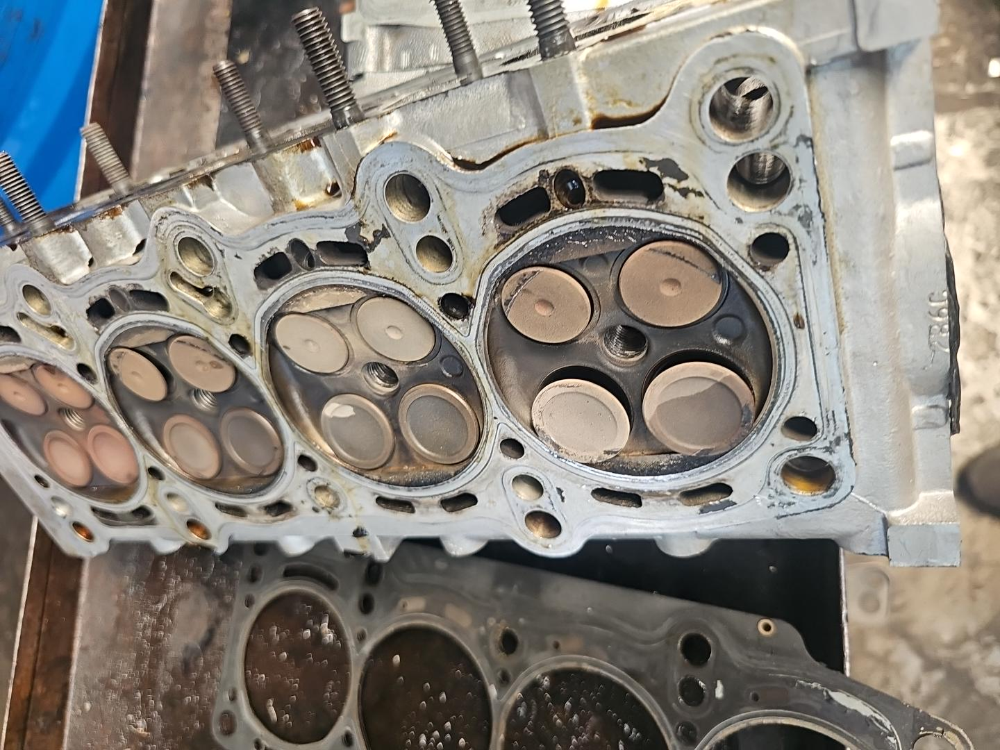

01
FIAT TIPO 2022

01
FIAT TIPO 2022NON PARTE
Il cliente segnala che l'auto non si avvia. Vengono effettuati i primi controlli per individuare la causa.

02
CAUSA IDENTIFICATACINGHIA SPEZZATA
Dopo approfonditi controlli si scopre la rottura della cinghia di distribuzione e del cuscinetto tenditore.

03
DANNO RISCONTRATO2 VALVOLE COMPROMESSE
L'ispezione della testata conferma che due valvole di scarico risultano compromesse.
VEICOLOFiat Tipo 2022
DIAGNOSIRottura distribuzione e cuscinetto
INTERVENTORipristino testata e componenti danneggiati